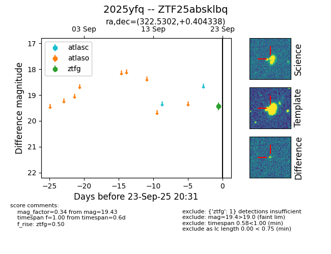

FINK: ZTF25absklbq
Lasair: ZTF25absklbq
ALeRCE: ZTF25absklbq
TNS: 2025yfq
YSE: 2025yfq
ZTF25absklbq (ztf,fink)
2025yfq (tns,yse)
equatorial (ra, dec) = (322.5302,+0.40434)
galactic (l, b) = (54.0551,-34.39632)

last ztfg=19.43
1 ztfg detections